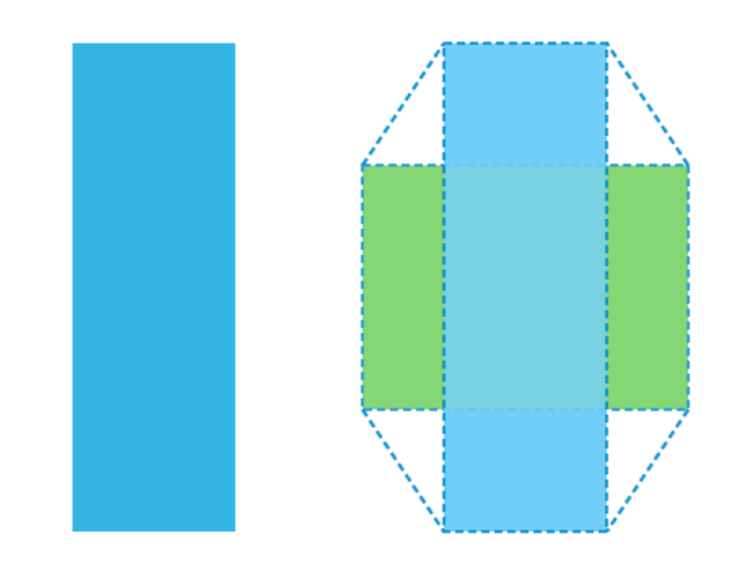

Ca să mărim şi să micşorăm elementele HTML, putem să folosim funcţia scale() a proprietăţii transform. Sintaxa ei este următoarea:
scale(width_ratio, height_ration)
Funcţia scale() acceptă doi parametri care se folosesc pentru calcularea noilor dimensiuni ale elementelor. Primul parametru se referă la lăţime, iar al doilea la înălţime. Valoarea 1 ne arată că nu va avea loc nicio schimbare a dimensiunii. În mod similar, valoarea 2 ne arată că dimensiunea se va mări de două ori, iar valoarea 0.5 ne arată că dimensiunea să va micşora de două ori.
#transformed {
transform: scale(0.5, 2);
}
În exemplul prezentat, am definit că lăţimea elementului trebuie micşorată de două ori, iar înălţimea trebuie mărită de două ori. Astfel, exemplul va produce un efect identic celui din imaginea de mai jos
